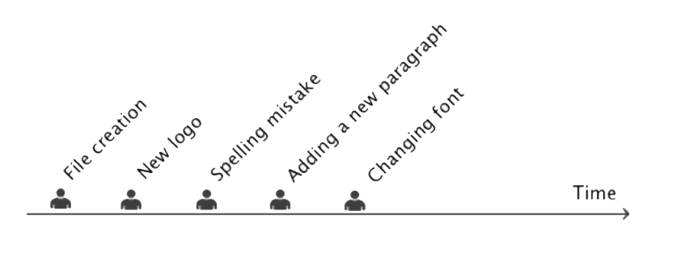
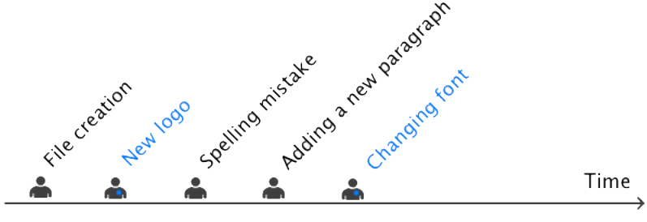

Git Started with Github
Chawki BENCHEHIDA - Ilyes HAMMADI - Abdeldjalil FORTAS


Dennis Ritchie
created the C programming language and the Unix operating system

Alan Turing
the father of theoretical computer science and artificial intelligence

John McCarthy
He coined the term "artificial intelligence" (AI) and developed the Lisp programming language family

Linus Torvalds
the creator and, for a long time, principal developer, of the Linux kernel
He also created the distributed revision control system Git

Richard Stallman
launched the GNU Project, founded the Free Software Foundation, developed the GNU Compiler Collection and GNU Emacs, and wrote the GNU General Public License

Nass mla7
5,062
developers from more than 1,300 companies
Linux Kernel
555
developers and more 9900 commits
Free Code Camp
Don't lost yourself in the code
Keep trace of your evolutions
EVERYDAY WORKFLOW
1 - Create a file
2 - Save it
3 - Edit it
4 - Save it again
5 - etc ...
FILE LIFE

Manuel Version Control
DropBox
Permet de garder trace des fichiers ainsi que leurs modifications
* * *
Google Docs
Outils pour traitement de texte en cloud. il permet de suivre en temps réel le changement du documents
* * *
Multiple Sauvegarde
Faire une copie du fichier à chaque fois et le stocker dans un dossier différent
* * *
CAN WE AUTOMATE THIS?
For each document version, we need to know
When the file was modified
What changed
Why it was modified
THERE’S MORE, TEAMS

AND ONE MORE QUESTION
For each document version, we need to know
When the file was modified
What changed
Why it was modified
Who did the change
THE PERFECT TOOL
We want a tool that
Tracks document's version
Keeps an history of document's changes
Foster team work

12,000,000
Of developers use it
It's the most popular CVS in the world
SETUP
Linux : $ sudo apt-get install git
Windows :
Download & install git at http://git-scm.com/
Define a user name$ git config --global user.name "Your Name"
Define an email count $ git config --global user.name "Your Name"
Check your git informations$ git config -l
Git WorkFlow
Git WorkFlow
Git WorkFlow
Create a folder$ mkdir myapp
Move to that Folder$ cd myapp
Initialize git on that Folder$ git init
Create a file$ touch index.html
STATUS
git can tell you if your folder has some modified files (dirty)$ git status
COMMIT
Snapshot of your work
HOW TO COMMIT ?
Create a folder$ mkdir myapp
Add all the files in Staging area$ git add --all
Take a snapshot (commit)$ git commit -m "a message about this change"
DIFF
if git status tells you something changed, you can inspect exactly what changed :
$ git diff
LOG
Show commit history with
$ git log
GUI Tools
LET'S SHARE OUR PROJECT WITH THE WORLD
Git + GitHub WorkFlow
WE NEED A REMOTE !
Go to GitHub, create a repo: https://github.com/new
$ git remote add origin https://github.com/[user]/[repo].git
PUSH
Share the code with your team, and the world
$ git push origin master
PULL
$ git pull origin master